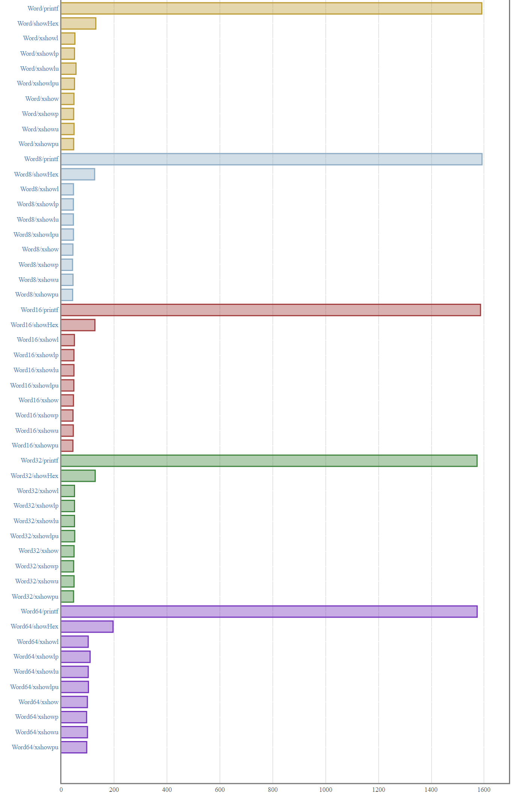
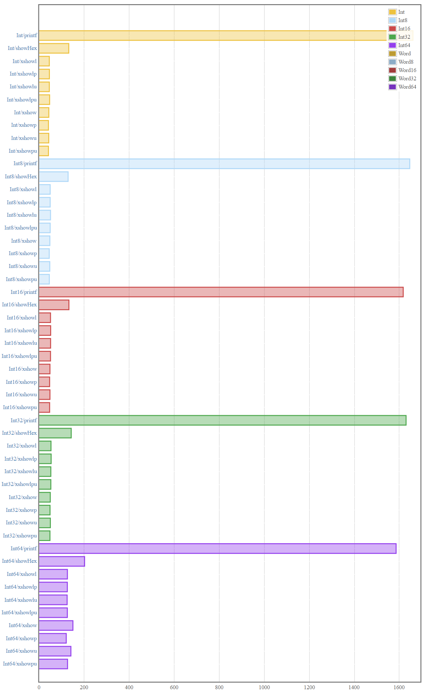
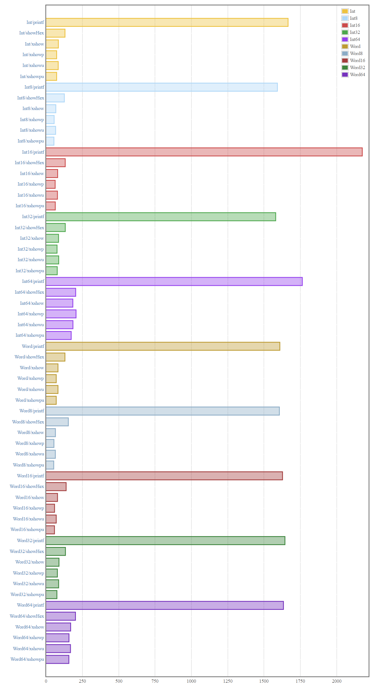

Jason Shipman
August 19, 2017

In the previous post, we significantly improved performance for all of our functions by digging into the internals of the text package. Our API looked like this:
class HexShow a where
xshow :: a -> Text.Text
xshowp :: a -> Text.Text
xshowu :: a -> Text.Text
xshowpu :: a -> Text.Text
xshowl :: a -> Text.Lazy.Text
xshowlp :: a -> Text.Lazy.Text
xshowlu :: a -> Text.Lazy.Text
xshowlpu :: a -> Text.Lazy.Text
instance HexShow Word32 where
xshowp = showHexTextLower
xshowpu = showHexTextUpper
-- remaining instances...When we finished our dive into text, the benchmark report’s summary looked like this:

All of the functions in Hexy’s public API became pretty speedy, clocking in at about 50 nanoseconds each. Each of our functions is about 2.5 times faster than showHex and they are doing more work via zero-padding and prefixing.
In this post, we will update our benchmark suite to test all the data types Hexy supports and see how our performance updates pan out across the board.
Word32Throughout the post series, we have almost exclusively benchmarked using Word32. Hexy supports 9 other data types! For all we know, our implementation might be fast for Word32 and slow for Word8. We will not know until we benchmark, so let’s get to it.
import Hexy
import Criterion.Main
import Data.Int (Int, Int8, Int16, Int32, Int64)
import Data.Word (Word, Word8, Word16, Word32, Word64)
import Numeric (showHex)
import Text.Printf (printf)
main :: IO ()
main = defaultMain
[ bgroup "Word"
[ bench "printf" $ nf (printf "%08x" :: Word -> String) 0x1f
, bench "showHex" $ nf (showHex (0x1f :: Word)) ""
, bench "xshowl" $ nf xshowl (0x1f :: Word)
, bench "xshowlp" $ nf xshowlp (0x1f :: Word)
, bench "xshowlu" $ nf xshowlu (0x1f :: Word)
, bench "xshowlpu" $ nf xshowlpu (0x1f :: Word)
, bench "xshow" $ nf xshow (0x1f :: Word)
, bench "xshowp" $ nf xshowp (0x1f :: Word)
, bench "xshowu" $ nf xshowu (0x1f :: Word)
, bench "xshowpu" $ nf xshowpu (0x1f :: Word)
]
, bgroup "Word8"
[ bench "printf" $ nf (printf "%08x" :: Word8 -> String) 0x1f
, bench "showHex" $ nf (showHex (0x1f :: Word8)) ""
, bench "xshowl" $ nf xshowl (0x1f :: Word8)
, bench "xshowlp" $ nf xshowlp (0x1f :: Word8)
, bench "xshowlu" $ nf xshowlu (0x1f :: Word8)
, bench "xshowlpu" $ nf xshowlpu (0x1f :: Word8)
, bench "xshow" $ nf xshow (0x1f :: Word8)
, bench "xshowp" $ nf xshowp (0x1f :: Word8)
, bench "xshowu" $ nf xshowu (0x1f :: Word8)
, bench "xshowpu" $ nf xshowpu (0x1f :: Word8)
]
, bgroup "Word16"
[ bench "printf" $ nf (printf "%08x" :: Word16 -> String) 0x1f
, bench "showHex" $ nf (showHex (0x1f :: Word16)) ""
, bench "xshowl" $ nf xshowl (0x1f :: Word16)
, bench "xshowlp" $ nf xshowlp (0x1f :: Word16)
, bench "xshowlu" $ nf xshowlu (0x1f :: Word16)
, bench "xshowlpu" $ nf xshowlpu (0x1f :: Word16)
, bench "xshow" $ nf xshow (0x1f :: Word16)
, bench "xshowp" $ nf xshowp (0x1f :: Word16)
, bench "xshowu" $ nf xshowu (0x1f :: Word16)
, bench "xshowpu" $ nf xshowpu (0x1f :: Word16)
]
, bgroup "Word32"
[ bench "printf" $ nf (printf "%08x" :: Word32 -> String) 0x1f
, bench "showHex" $ nf (showHex (0x1f :: Word32)) ""
, bench "xshowl" $ nf xshowl (0x1f :: Word32)
, bench "xshowlp" $ nf xshowlp (0x1f :: Word32)
, bench "xshowlu" $ nf xshowlu (0x1f :: Word32)
, bench "xshowlpu" $ nf xshowlpu (0x1f :: Word32)
, bench "xshow" $ nf xshow (0x1f :: Word32)
, bench "xshowp" $ nf xshowp (0x1f :: Word32)
, bench "xshowu" $ nf xshowu (0x1f :: Word32)
, bench "xshowpu" $ nf xshowpu (0x1f :: Word32)
]
, bgroup "Word64"
[ bench "printf" $ nf (printf "%08x" :: Word64 -> String) 0x1f
, bench "showHex" $ nf (showHex (0x1f :: Word64)) ""
, bench "xshowl" $ nf xshowl (0x1f :: Word64)
, bench "xshowlp" $ nf xshowlp (0x1f :: Word64)
, bench "xshowlu" $ nf xshowlu (0x1f :: Word64)
, bench "xshowlpu" $ nf xshowlpu (0x1f :: Word64)
, bench "xshow" $ nf xshow (0x1f :: Word64)
, bench "xshowp" $ nf xshowp (0x1f :: Word64)
, bench "xshowu" $ nf xshowu (0x1f :: Word64)
, bench "xshowpu" $ nf xshowpu (0x1f :: Word64)
]
-- and so on for the Int data types
]Let’s run our updated benchmark suite:
$ stack bench --benchmark-arguments "--output bench.html"View the full report from this run here. The Word portion of the summary looks like this:

The above summary is looking good.
Our functions operating on Word, Word8, Word16, and Word32 all clock in at around 50 nanoseconds. Our functions operating on Word64 came in at around 100 nanoseconds. This is reasonable since we are using the value 0x1f across the board and the Word64 versions have to do twice as much zero-padding as the Word32 versions. All of our Word-y functions are faster than the corresponding call to showHex from base and are doing more work.
The Int portion of the summary looks like this:

In general, the above Int summary is also looking good.
All of our Int-y functions are faster than the corresponding call to showHex from base. Our functions operating on Int, Int8, Int16, and Int32 all clock in at around 50 nanoseconds just like the Word versions.
Our functions operating on Int64 came in at around 125 nanoseconds. This is unlike our Word64 benchmarks which were about 100 nanoseconds each. There may be a way to specifically optimize the Int64 implementation, but we will not worry about it in this post series. Our users are unlikely to be frequently pretty-printing 64-bit signed integers anyways.
We can more confidently say hexy is performant now that we have benchmarked all the types our library supports!
Our benchmarks all test the same hex value - 0x1f. This means our code is doing more work on the zero-padding side as opposed to the hex conversion side for most data types.
Our benchmark suite would be even more complete if we had some cases testing larger hex values too. I leave this as an exercise to the reader. This is a nice way to get familiar with criterion if you have not used it before.
Throughout this post series, we have run benchmarks many times but have never run profiling. Profiling is often essential to identify hotspots and is an important technique to have at our disposal. A recent blog post from Cody Goodman is a great walkthrough on getting started with profiling.
A few additional areas to explore: INLINE, core output, etc. Grokking core is what I personally want to learn next in regards to performant Haskell.
Thanks for reading!
All code in this post is available on GitHub.
We recall from the second post that text and bytestring are regarded as the most popular alternatives to String from base.
foundation is a relatively new package offering its own solution to strings and is garnering some interest from the community. foundation strings are packed UTF8 as opposed to text’s packed UTF16. They only come in a strict flavor. Like text, they are generally always a better choice performance-wise than base’s String (i.e. [Char]). foundation strings are not in widespread use like text or bytestring, but they are still very much worth exploring in my opinion.
Note that foundation has a rapidly evolving API. We will use foundation-0.0.13.
We can write the version of hexy from the previous post targeting foundation instead of text with minimal changes. Here is Hexy.Internal:
{-# LANGUAGE BangPatterns #-}
module Hexy.Internal where
import Control.Monad.ST (ST)
import qualified Control.Monad.ST as ST
import qualified Data.Char as Char
import Data.Int (Int, Int8, Int16, Int32, Int64)
import qualified Foundation
import qualified Foundation.Array
import qualified Foundation.Collection
import qualified Foundation.String
import Data.Word (Word, Word8, Word16, Word32, Word64)
import Foreign.Storable (Storable(..))
import qualified Foreign.Storable as Storable
showHexTextLower :: (Integral a, Show a, Storable a) => a -> Foundation.String
-- a bunch of SPECIALIZE pragmas...
showHexTextLower = textShowIntAtBase 16 intToDigitLower
showHexTextUpper :: (Integral a, Show a, Storable a) => a -> Foundation.String
-- a bunch of SPECIALIZE pragmas...
showHexTextUpper = textShowIntAtBase 16 intToDigitUpper
textShowIntAtBase :: (Integral a, Show a, Storable a) => a -> (Int -> Char) -> a -> Foundation.String
-- a bunch of SPECIALIZE pragmas...
textShowIntAtBase base toChr n0
| base <= 1 = errorWithoutStackTrace ("Hexy.Internal.textShowIntAtBase: applied to unsupported base " ++ show base)
| n0 < 0 = errorWithoutStackTrace ("Hexy.Internal.textShowIntAtBase: applied to negative number " ++ show n0)
| otherwise = ST.runST $ do
let !size = 2 + (2 * Storable.sizeOf n0)
mutableBuffer <- Foundation.Collection.mutNew (Foundation.CountOf size)
let hexLoop i (n, d) = do
i' <- unsafeWriteRev mutableBuffer i c
case n of
0 -> pure i'
_ -> hexLoop i' (quotRem n base)
where
c = toChr $ fromIntegral d
let zeroPadLoop i
| i < 2 = pure i
| otherwise = do
i' <- unsafeWriteRev mutableBuffer i '0'
zeroPadLoop i'
j <- hexLoop (Foundation.Offset $ size - 1) (quotRem n0 base)
k <- zeroPadLoop j
l <- unsafeWriteRev mutableBuffer k 'x'
_ <- unsafeWriteRev mutableBuffer l '0'
immutableBuffer <- Foundation.Collection.unsafeFreeze mutableBuffer
pure . Foundation.String.fromBytesUnsafe $ immutableBuffer
unsafeWriteRev :: Foundation.Array.MUArray Word8 s -> Foundation.Offset Word8 -> Char -> ST s (Foundation.Offset Word8)
unsafeWriteRev buffer i c = do
Foundation.Collection.mutUnsafeWrite buffer i (fromIntegral . Char.ord $ c)
pure (i - 1)
dropHexPrefix :: Foundation.String -> Foundation.String
dropHexPrefix = Foundation.drop 2
intToDigitLower :: Int -> Char
intToDigitLower i
| i >= 0 && i <= 9 = Char.chr (fromIntegral $ Char.ord '0' + i)
| i >= 10 && i <= 15 = Char.chr (fromIntegral $ Char.ord 'a' + i - 10)
| otherwise = errorWithoutStackTrace ("Hexy.Internal.intToDigitLower: not a digit " ++ show i)
intToDigitUpper :: Int -> Char
intToDigitUpper i
| i >= 0 && i <= 9 = Char.chr (fromIntegral $ Char.ord '0' + i)
| i >= 10 && i <= 15 = Char.chr (fromIntegral $ Char.ord 'A' + i - 10)
| otherwise = errorWithoutStackTrace ("Hexy.Internal.intToDigitUpper: not a digit " ++ show i)We changed some return types, updated unsafeWriteRev/dropHexPrefix, and replaced our done callback with an unsafeFreeze operation followed by a fromBytesUnsafe. The rest is pretty much the same.
hexy-foundation is available on GitHub.
Let’s run benchmarks and see how this performs. View the full report from the hexy-foundation run here.
The summary looks like this:

Most of our functions are roughly 20-30 nanoseconds slower using foundation strings instead of Text. Exceptions are the Word64 and Int64 variants which are anywhere from 50-100 nanoseconds slower. Our functions are still faster than using showHex from base though (not counting the somewhat inconsistent benchmarks for 64-bit types).
We should not interpret these results as “text good, foundation bad”, though we will stick with our decision of using text in hexy. foundation still gave great performance compared to using String values from base. The interesting bit is that foundation is not just about strings. The package is intended to be an alternate Prelude and covers a lot of ground. It has an expansive collections API, a more granular numerical class hierarchy, multiple flavors of arrays, and more.
foundation’s features are off-topic for this blog post series, but I encourage you to check it out!